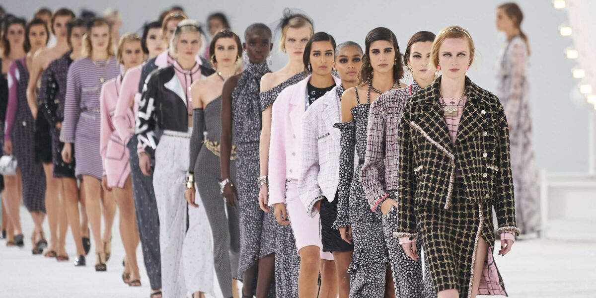
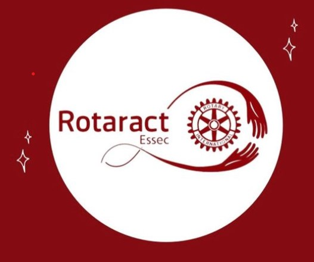

Hello, my name is Lilou Charon, i am in my first year of BBA at theESSEC Business School
I grew up in "tour", in the "Centre val de Loire". Recently I have been at the essec. Even though I have only been here for 1 year, I am very happy with my experience, to be able to learn with inexhaustible resources..." Le Wagon
I am passionate about Mode Since I was little I have always loved fashion I think I can even say I grew up in it. Indeed, coming from a family where fashion is already very present, the way was wide open to me. That's why I stay informed on a daily basis, whether via social networks or newspapers.
I really like Food Like most people, I love food! However, for me it is really important. I like to try food from all over the world. I regularly test different restaurants for specific foods. Eating food from around the world allows me to travel through my taste buds. However, for my favourite dish I stick to the basics: lasagna. It reminds me of my childhood and fills me with memories.
My association at the essec is Rotaract. Community life is very important to me. This allows me to be on concrete subjects and to participate actively in the life of ESSEC. On the other hand, I have always wanted to participate in charity work. That's why Rotaract seemed to be perfect for me. And I was not mistaken! Since I've been there I really blossom and create projects on my scale to help others
